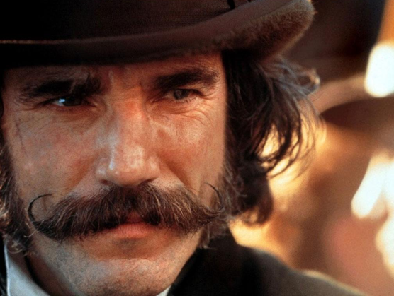

Daniel is a Sagittarius, enjoys long walks on the beach, and has three kittens.
"For as long as I can remember, the thing that gave me a sense of wonderment and renewal... has always been the work of other actors."
-Daniel Day LewisWiki for Daniel Day Lewis
This is literally the only picture on my computer because it is new.
| Mane Color | Pony Name | Prance | pink | starlight | assertive |
|---|
| Semester 1 | Semester 2 | Semester 3 | Semester 4 | Semester 5 |
|---|---|---|---|---|
| adrian and bill and gary | adrian and bill and keith | ron and stewart | ron and keith and gary | gary and bill and bob |